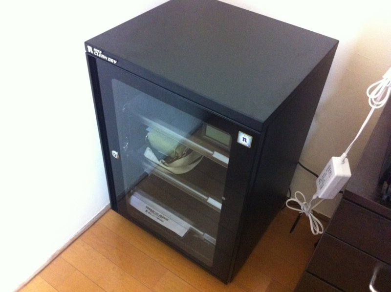
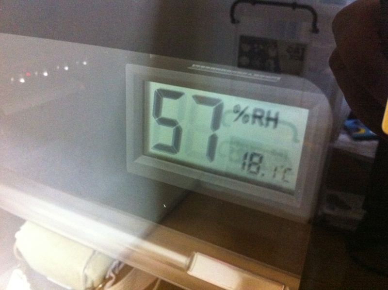
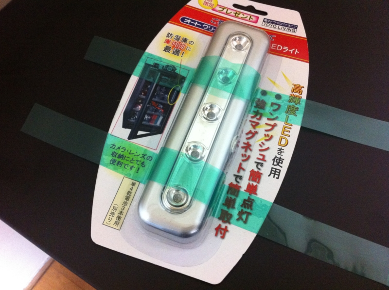
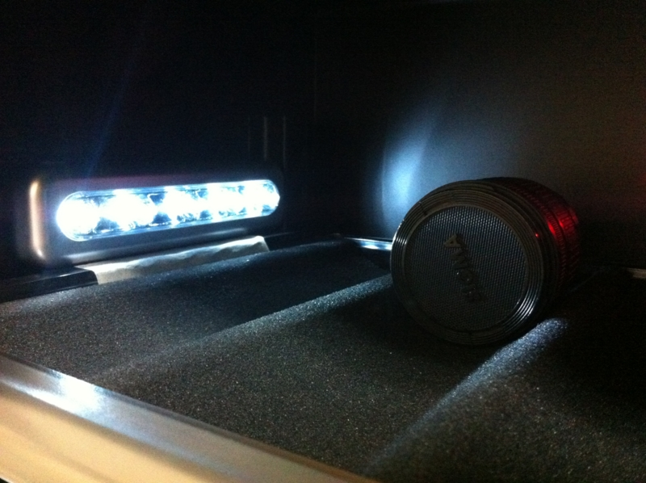

防湿庫買った。
執筆日時：

昨年の暮れに Nikon D300s を買ったとき古いレンズを処分したのだけど、その一つがカビていた。レンズを覗いてみると、白くてフワフワしたものが住んでいる。幸い、中古屋でも2,000円もしない安いレンズだったのでよかったけれど、これが5万も10万もするレンズだったらと思うと ((((；ﾟДﾟ))))ｶﾞｸｶﾞｸﾌﾞﾙﾌﾞﾙ
というわけで、防湿庫を買ってみた。少し高いと思ったけど、レンズをダメにするよりはいい。

東洋リビング オートクリーンドライ 防湿庫 79L ED-80CDB
- 出版社/メーカー: 東洋リビング
- 発売日: 2009/03/03
- メディア: エレクトロニクス
- クリック: 14回
- この商品を含むブログ (3件) を見る
あまりよくは知らないのだけど、防湿庫メーカーは「東洋リビング」と「トーリ・ハン」（そして「ハクバ」）というが主流らしい。防湿庫のツボ（東洋リビングVSトーリハン）どっちが最高か？ によると、こんな感じなんだそうな。
| 商 号 | トーリ・ハン株式会社 | 東洋リビング株式会社 |
| 本社所在地 | 東京都台東区（支店 大阪） | 横浜市港南区（支店 大阪・福岡） |
| ホームページ | http://www.dry-cabi.co.jp/ | http://www.toyoliving.co.jp/ |
| 電気代 | 1日約1円（使用頻度、システムにもよります）月40円以下 | 1日約1円（使用頻度にもよります） |
| 除湿方法 | 除湿システムは1種類 | 除湿システムは1種類（ホコリを取り除く機能搭載） |
| 棚 | スチール（金属）製 | オール透明マット付き引き出し棚 |
| 棚を支える鋲 | 金属製 | プラスチック製レール |
| 耐荷重 | 9～36Kg（業務用は除く） | 12Kg～ |
| 特徴1 | 棚板は丈夫なスチール製の棚 | オール透明マット付き引き出し棚 |
| 特徴2 | 消耗品が無く乾燥剤は交換不要で経済的です（半永久的） | 一目で解りやすいデジタル湿度計 |

トーリ・ハンのほうが、若干プロ向けなのかな？ 少し材質がいいみたい。自分は"ホコリ除去機能"に惹かれて東洋リビングを選択した。デジタル湿度計も素敵だった。


おまけでLEDライトもらった。そんなに必要だとも思えないけれど、あればあったで少しうれしい。